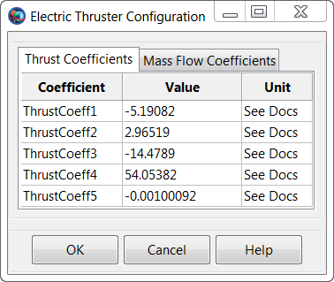
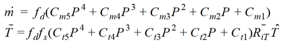
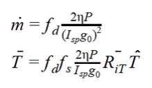

ElectricThruster
ElectricThruster — An electric thruster model
Description
The ElectricThruster resource is a model of an electric thruster which supports several models for thrust and mass flow computation. The ElecticThruster model also allows you to specify properties such as a duty cycle and scale factor and to connect an ElectricThruster with an ElectricTank. You can flexibly define the direction of the thrust by specifying the thrust components in coordinate systems such as (locally defined) SpacecraftBody or LVLH, or by choosing any configured CoordinateSystem resource.
For a complete descripton of how to configure all Resources required for electric propulsion modelling, see the Tutorial named Chapter 12, Electric Propulsion
See Also ElectricTank, NuclearPowerSystem, SolarPowerSystem
Fields
| Field | Description | ||||||||||||
|---|---|---|---|---|---|---|---|---|---|---|---|---|---|
| Axes | Allows the user to define a spacecraft centered set of axes for the ElectricThruster. This field cannot be modified in the Mission Sequence
| ||||||||||||
| ConstantThrust | Thrust value used ThrustModel is set to ConstantThrustAndIsp.
| ||||||||||||
| CoordinateSystem | Determines what coordinate system the orientation parameters, ThrustDirection1, ThrustDirection2, and ThrustDirection3 refer to. This field cannot be modified in the Mission Sequence.
| ||||||||||||
| DecrementMass | Flag which determines if the FuelMass is to be decremented as it used. This field cannot be modified in the Mission Sequence.
| ||||||||||||
| DutyCycle | Fraction of time that the thrusters are on during a maneuver. The thrust applied to the spacecraft is scaled by this amount. Note that this scale factor also affects mass flow rate.
| ||||||||||||
| FixedEfficiency | Thruster efficiency. Only used when ThrustModel is FixedEfficiency.
| ||||||||||||
| GravitationalAccel | Value of the gravitational acceleration used for the FuelTank/Thruster calculations.
| ||||||||||||
| Isp | Thruster specific impulse. Only used when ThrustModel is set to FixedEfficiency or ConstantThrustAndIsp.
| ||||||||||||
| MassFlowCoeff1 | Mass flow coefficient.
| ||||||||||||
| MassFlowCoeff2 | Mass flow coefficient.
| ||||||||||||
| MassFlowCoeff3 | Mass flow coefficient.
| ||||||||||||
| MassFlowCoeff4 | Mass flow coefficient.
| ||||||||||||
| MassFlowCoeff5 | Mass flow coefficient.
| ||||||||||||
| MaximumUsablePower | The maximum power the thruster can use to generate thrust. Power provided above MaximumUsablePower is not used in the thrust model.
| ||||||||||||
| MinimumUsablePower | The minimum power the thruster can use to generate thrust. If power provided to thruster is below MinimumUsablePower, no thrust is generated.
| ||||||||||||
| MixRatio | The mixture ratio employed to draw fuel from multiple tanks. For example, if there are two tanks and MixRatio is set to [2 1], then twice as much fuel will be drawn from tank one as from tank 2 in the Tank list. Note, if a MixRatio is not supplied, fuel is drawn from tanks in equal amounts, (the MixRatio is set to a vector of ones the same length as the Tank list).
| ||||||||||||
| Origin | This field, used in conjunction with the Axes field, allows the user to define a spacecraft centered set of axes for the ElectricThruster. Origin has no affect when a Local coordinate system is used and the Axes are set to MJ2000Eq or SpacecraftBody. This field cannot be modified in the Mission Sequence.
| ||||||||||||
| Tanks | ElectricTank from which the
ElectricThruster draws propellant from. In a
script command, an empty list, e.g.,
| ||||||||||||
| ThrustCoeff1 | Thrust coefficient.
| ||||||||||||
| ThrustCoeff2 | Thrust coefficient.
| ||||||||||||
| ThrustCoeff3 | Thrust coefficient.
| ||||||||||||
| ThrustCoeff4 | Thrust coefficient.
| ||||||||||||
| ThrustCoeff5 | Thrust coefficient.
| ||||||||||||
| ThrustDirection1 | X component of the spacecraft thrust vector direction.
| ||||||||||||
| ThrustDirection2 | Y component of the spacecraft thrust vector direction.
| ||||||||||||
| ThrustDirection3 | Z component of the spacecraft thrust vector direction.
| ||||||||||||
| ThrustModel | The type of thruster model. See Mathematical Models for a detailed description of the options.
| ||||||||||||
| ThrustScaleFactor | ThrustScaleFactor is a scale factor that is multiplied by the thrust vector, for a given thruster, before the thrust vector is added into the total acceleration. Note that the value of this scale factor does not affect the mass flow rate.
|
Interactions
| Command or Resource | Description |
|---|---|
| BeginFiniteBurn/EndFiniteBurn command | Use these commands, which require a Spacecraft and a FiniteBurn name as input, to implement a finite burn. |
| ElectricTank resource | This resource contains the fuel used to power the ElectricThruster specified by the FiniteBurn resource. |
| FiniteBurn resource | When using the BeginFiniteBurn/EndFiniteBurn commands, you must specify which FiniteBurn resource to implement. The FiniteBurn resource specifies which ElectricThruster(s) to use for the finite burn. |
| Spacecraft resource | When using the BeginFiniteBurn/EndFiniteBurn commands, you must specify which Spacecraft to apply the finite burn to. |
| Propagate command | In order to implement a non-zero finite burn, a Propagate statement must occurr within the BeginFiniteBurn and EndFiniteBurn statements. |
GUI
The ElectricThruster dialog box allows you to specify properties of an ElectricThruster including the Coordinate System of the thrust acceleration direction vector, the thrust magnitude and Isp coefficients, and choice of ElectricTank. The layout of the ElectricThruster dialog box is shown below.
 |
When configuring the Coordinate System field, you can choose between existing coordinate systems or use locally defined coordinate systems. The Axes field is only active if Coordinate System is set to . The Origin field is only active if Coordinate System is set to and Axes is set to either or .
Selecting the button brings up the following dialog box where you may input the coefficients for the ElectricThruster polynomial.
|  |
Similarly, clicking the Configure Polynomials also allows you to edit mass flow coefficients as shown below.
 |
Remarks
Mathematical Models
The ElectricThruster model supports several models for computation of thrust and and mass flow rate and the model used is set by the ThrustModel field. When ThrustModel is set to ThrustMassPolynomial, the following polynomials are used to compute thrust and mass flow rate
|  |
where P is the power provided to the thruster which is computed using the power logic defined on the FiniteBurn resource, f_d is duty cycle, f_s is thrust scale factor, R_iT is the rotation matrix from the thrust coordinate system to the inertial system, and T_hat is the thrust unit vector. By industry convention, the mass flow rate and thrust polynomial equations are in mg/s and milli-Newtons respectively. GMAT internally converts the units to be consistent with the equations of motion.
When ThrustModel is set to ConstantThrustAndIsp, the following polynomials are used to compute thrust and mass flow rate
 |
where C_t1 is set using the ConstantThrust field, Isp is set using the Isp field, f_d is duty cycle, f_s is thrust scale factor, R_iT is the rotation matrix from the thrust coordinate system to the inertial system, and T_hat is the thrust unit vector. Note, by industry convention, the mass flow rate and thrust polynomial equations are in mg/s and milli-Newtons respectively. GMAT internally converts the units to be consistent with the equations of motion.
When ThrustModel is set to FixedEfficiency, the following polynomials are used to compute thrust and mass flow rate
|  |
where P is the power provided to the thruster which is computed from the power logic defined on the FiniteBurn Resource. "Eta" is the FixedEfficiency setting, f_d is duty cycle, f_s is thrust scale factor, R_iT is the rotation matrix from the thrust coordinate system to the inertial system, and T_hat is the thrust unit vector.
Use of Thruster Resource in Conjunction With Maneuvers
An ElectricThruster resource is used only in association with finite maneuvers. To implement a finite maneuver, you must first create both an ElectricTank and a FiniteBurn resource. You must also associate an ElectricTank with the ElectricThruster resource and you must associate an ElectricThruster with the FiniteBurn resource. The actual finite maneuver is implemented using the BeginFiniteBurn/EndFiniteBurn commands.
For a complete descripton of how to configure all Resources required for electric propulsion modelling, see the Tutorial named Chapter 12, Electric Propulsion
Local Coordinate Systems
Here, a Local coordinate system is defined as one that we configure "locally" using the ElectricThruster resource interface as opposed to defining a coordinate system using the Coordinate Systems folder in the Resources Tree.
To configure a local coordinate system, you must specify the coordinate system of the input thrust acceleration direction vector, . If you choose a local coordinate system, the four choices available, as given by the sub-field, are , , , and . or Velocity-Normal-Binormal is a non-inertial coordinate system based upon the motion of the spacecraft with respect to the sub-field. For example, if the is chosen as Earth, then the X-axis of this coordinate system is the along the velocity of the spacecraft with respect to the Earth, the Y-axis is along the instantaneous orbit normal (with respect to the Earth) of the spacecraft, and the Z-axis completes the right-handed set.
Similarly, Local Vertical Local Horizontal or is also a non-inertial coordinate system based upon the motion of the spacecraft with respect to the sub-field. Again, if we choose Earth as the origin, then the X-axis of this coordinate system is the position of the spacecraft with respect to the Earth, the Z-axis is the instantaneous orbit normal (with respect to the Earth) of the spacecraft, and the Y-axis completes the right-handed set.
is the J2000-based Earth-centered Earth mean equator inertial coordinate system. Note that the sub-field is not needed to define this coordinate system.
is the attitude system of the spacecraft. Since the thrust is applied in this system, GMAT uses the attitude of the spacecraft, a spacecraft attribute, to determine the inertial thrust direction. Note that the Origin sub-field is not needed to define this coordinate system.
Caution Regarding Force Model Discontinuties
Note that when modellign shadows on a SolarPowerSystem Resource, it is possible that there is not enough power available to power an ElectricThruster. This occurs when the power available from the SolarPowerSystem, or the power distributed to the thruster, is less than MinimumUsablePower. When this occurs, the thruster model turns off thrust and this can cause a discontinuity in the force model. To avoid this, you must propagate to the boundary and switch propagators, or configure the Propagator to continue propagating if a poor step occurs.
Examples
Create a default ElectricTank and an ElectricThruster that allows for fuel depletion, assign the ElectricThruster the default ElectricTank, and attach both to a Spacecraft.
% Create an ElectricTank Resource
Create ElectricTank anElectricTank
% Create an Electric Thruster Resource
Create ElectricThruster anElectricThruster
anElectricThruster.CoordinateSystem = Local
anElectricThruster.Origin = Earth
anElectricThruster.Axes = VNB
anElectricThruster.ThrustDirection1 = 1
anElectricThruster.ThrustDirection2 = 0
anElectricThruster.ThrustDirection3 = 0
anElectricThruster.DutyCycle = 1
anElectricThruster.ThrustScaleFactor = 1
anElectricThruster.DecrementMass = true
anElectricThruster.Tank = {anElectricTank}
anElectricThruster.GravitationalAccel = 9.810000000000001
anElectricThruster.ThrustModel = ThrustMassPolynomial
anElectricThruster.MaximumUsablePower = 7.266
anElectricThruster.MinimumUsablePower = 0.638
anElectricThruster.ThrustCoeff1 = -5.19082
anElectricThruster.ThrustCoeff2 = 2.96519
anElectricThruster.ThrustCoeff3 = -14.4789
anElectricThruster.ThrustCoeff4 = 54.05382
anElectricThruster.ThrustCoeff5 = -0.00100092
anElectricThruster.MassFlowCoeff1 = -0.004776
anElectricThruster.MassFlowCoeff2 = 0.05717
anElectricThruster.MassFlowCoeff3 = -0.09956
anElectricThruster.MassFlowCoeff4 = 0.03211
anElectricThruster.MassFlowCoeff5 = 2.13781
anElectricThruster.FixedEfficiency = 0.7
anElectricThruster.Isp = 4200
anElectricThruster.ConstantThrust = 0.237
% Create a SolarPowerSystem Resource
Create SolarPowerSystem aSolarPowerSystem
% Create a Spacecraft Resource and attach hardware
Create Spacecraft DefaultSC
DefaultSC.Tanks = {anElectricTank}
DefaultSC.Thrusters = {anElectricThruster}
DefaultSC.PowerSystem = aSolarPowerSystem
BeginMissionSequence